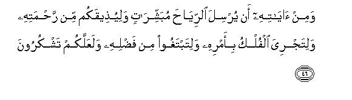

بسم الله الرحمن الرحيم
Sayyid Abul Ala Maududi - Tafhim al-Qur'an - The Meaning of the Qur'an
 30.
Surah Ar Rum (The Romans)
30.
Surah Ar Rum (The Romans)
The Surah takes its name Ar-Rum from the second verse in which the words ghulibat-ir-Rum have occurred.
The period of the revelation of this Surah is determined absolutely by the historical event that has been mentioned at the outset. It says: "The Romans have been vanquished in the neighboring land."In those days the Byzantine occupied territories adjacent to Arabia were Jordan, Syria and Palestine, and in these territories the Romans were completely overpowered by the Iranians in 615 A. D. Therefore, it can be said with absolute certainty that this Surah was sent down in the same year, and this was the year in which the migration to Habash took place.
The prediction made in the initial verses of this Surah is one of the most outstanding evidences of the Quran's being the Word of Allah and the Holy Prophet Muhammad's being a true Messenger of Allah. Let us have a look at the historical background relevant to the verses.
Eight years before the Holy Prophet's advent as a Prophet the Byzantine Emperor Maurice was overthrown by Phocus, who captured the throne and became king. Phocus first got the Emperor's five sons executed in front of him, and then got the Emperor also killed and hung their heads in a thoroughfare in Constantinople. A few days after this he had the empress and her three daughters also put to death. The event provided Khusrau Parvez, the Sassanid king of Iran; a good moral excuse to attack Byzantium. For Emperor Maurice had been his benefactor; with his help he had got the throne of Iran. Therefore, he declared that he would avenge his godfather's and his children's murder upon Phocus, the usurper. So, he started war against Byzantium in 603 A. D. and within a few years, putting the Phocus armies to rout in succession, he reached Edessa (modern, Urfa) in Asia Minor, on the one hand, and Aleppo and Antioch in Syria, on the other. When the Byzantine ministers saw that Phocus could not save the country, they sought the African governor's help, who sent his son, Heraclius, to Constantinople with a strong fleet. Phocus was immediately deposed and Heraclius made emperor. He treated Phocus as he had treated Maurice. This happened in 610 A. D., the year the Holy Prophet was appointed to Prophethood.
The moral excuse for which Khusrau Parvez had started the war was no more valid after the deposition and death of Phocus. Had the object of his war really been to avenge the murder of his ally on Phocus for his cruelty, he would have come to terms with the new Emperor after the death of Phocus. But he continued the war, and gave it the color of a crusade between Zoroastrianism and Christianity. The sympathies of the Christian sects (i. e. Nestorians and Jacobians, etc.) which had been excommunicated by the Roman ecclesiastical authority and tyrannized for years also went with the Magian (Zoroastrian) invaders, and the Jews also joined hands with them; so much so that the number of the Jews who enlisted in Khusrau's army rose up to 26,000.
Heraclius could not stop this storm. The very first news that he received from the East after ascending the throne was that of the Iranian occupation of Antioch. After this Damascus fell in 613 A. D. Then in 614 A.D. the Iranians occupying Jerusalem played havoc with the Christian world. Ninety thousand Christians were massacred and the Holy Sepulcher was desecrated. The Original Cross on which, according to the Christian belief, Jesus had died was seized and carried to Mada'in. The chief priest Zacharia was taken prisoner and all the important churches of the city were destroyed. How puffed up was Khusrau Parvez at this victory can be judged from the letter that he wrote to Heraclius from Jerusalem. He wrote: "From Khusrau, the greatest of all gods, the master of the whole world: To Heraclius, his most wretched and most stupid servant: You say that you have trust in your Lord. why didn't then your Lord save Jerusalem from me?"
Within a year after this victory the Iranian armies over-ran Jordan, Palestine and the whole of the Sinai Peninsula, and reached the frontiers of Egypt. In those very days another conflict of a far greater historical consequence was going on in Makkah. The believers in One God, under the leadership of the Prophet Muhammad (may Allah's peace be upon him), were fighting for their existence against the followers of shirk under the command of the chiefs of the Quraish, and the conflict had reached such a stage that in 615 A. D., a substantial number of the Muslims had to leave their homes and take refuge with the Christian kingdom of Habash, which was an ally of the Byzantine Empire. In those days the Sassanid victories against Byzantium were the talk of the town, and the pagans of Makkah were delighted and were taunting the Muslims to the effect: "Look the fire worshipers of Iran are winning victories and the Christian believers in Revelation and Prophethood are being routed everywhere. Likewise, we, the idol worshipers of Arabia, will exterminate you and your religion."
These were the conditions when this Surah of the Quran was sent down, and in it a prediction was made, saying:"The Romans have been vanquished in the neighboring land and within a few years after their defeat, they shall be victorious. And it will be the day when the believers will rejoice in the victory granted by Allah." It contained not one but two predictions: First, the Romans shall be victorious; and second, the Muslims also shall win a victory at the same time. Apparently, there was not a remote chance of the fulfillment of the either prediction in the next few years. On the one hand, there were a handful of the Muslims, who were being beaten and tortured in Makkah, and even till eight years after this prediction there appeared no chance of their victory and domination. On the other, the Romans were losing more and more ground every next day. By 619 A. D. the whole of Egypt had passed into Sassanid hands and the Magian armies had reached as far as Tripoli. In Asia Minor they beat and pushed back the Romans to Bosporus, and in 617 A. D. they captured Chalcedon (modern, Kadikoy) just opposite Constantinople. The Emperor sent an envoy to Khusrau, praying that he was ready to have peace on any terms, but he replied, "I shall not give protection to the emperor until he is brought in chains before me and gives up obedience to his crucified god and adopts submission to the fire god." At last, the Emperor became so depressed by defeat that he decided to leave Constantinople and shift to Carthage (modern, Tunis). In short, as the British historian Gibbon says, even seven to eight years after this prediction of the Quran, the conditions were such that no one could even imagine that the Byzantine Empire would ever gain an upper hand over Iran. Not to speak of gaining domination, no one could hope that the Empire, under the circumstances, would even survive.
bid`i sinin, and the word bid` in Arabic applies to a number upto ten. Therefore, make the bet for ten years and increase the number of camels to a hundred." So, Hadrat Abu Bakr spoke to Ubayy again and bet a hundred camels for ten years.
In 622 A. D. as the Holy Prophet migrated to Madinah, the Emperor Heraclius set off quietly for Trabzon from Constantinople via the Black Sea and started preparations to attack Iran from rear. For this he asked the Church for money, and Pope Sergius lent him the Church collections on interest, in a bid to save Christianity from Zoroastrianism. Heraclius started his counter attack in 623 A. D. from Armenia. Next year, in 624 A. D., he entered Azerbaijan and destroyed Clorumia, the birthplace of Zoroaster, and ravaged the principal fire temple of Iran. Great are the powers of Allah, this was the very year when the Muslims achieved a decisive victory at Badr for the first time against the mushriks. Thus both the predictions made in Surah Rum were fulfilled simultaneously within the stipulated period of ten years.
The Byzantine forces continued to press the Iranians hard and in the decisive battle at Nineveh (627 A.D.) they dealt them the hardest blow. They captured the royal residence of Dastagerd, and then pressing forward reached right opposite to Ctesiphon, capital of Iran in those days. In 628 A. D. in an internal revolt, Khusrau Parvez was imprisoned and 18 of his sons were executed in front of him and a few days later he himself died in the prison. This was the year when the peace treaty of Hudaibiya was concluded, which the Quran has termed as "the supreme victory", and in this very year Khusrau's son, Qubad II, gave up all the occupied Roman territories, restored the True Cross and made peace with Byzantium. In 628 A. D., the Emperor himself went to Jerusalem to install the "Holy Cross" in its place, and in the same year the Holy Prophet entered Makkah for the first time after the Hijrah to perform the `Umra-tul-Qada'.
After this no one could have any doubt about the truth of the prophecy of the Quran, with the result that most of the Arab polytheists accepted Islam. The heirs of Ubayy bin Khalaf lost their bet and had to give a hundred camels to Hadrat Abu Bakr Siddiq. He took them before the Holy Prophet, who ordered that they be given away in charity, because the bet had been made at a time when gambling had not yet been forbidden by the Shari`ah; now it was forbidden. Therefore, the bet was allowed to be accepted from the belligerent disbelievers, but instruction given that it should be given away in charity and should not be brought in personal use.
The discourse begins with the theme that the Romans have been overcome and the people the world over think that the empire is about to collapse, but the fact is that within a few years the tables will be turned and the vanquished will again become victorious.
This introductory theme contains the great truth that man is accustomed to seeing only what is apparent and superficial. That which is behind the apparent and superficial he does not know. When in the petty matters of life, this habit to see only the apparent and superficial can lead man to misunderstandings and miscalculations, and when he is liable to make wrong estimates only due to lack of knowledge about "what will happen tomorrow", how stupendous will be his error if he risks his whole life-activity by placing reliance only upon what is visible and apparent with respect to his worldly life as a whole.
In this connection, the Signs of the universe which have been presented as evidence to prove the doctrine of the Hereafter arc precisely the same which support the doctrine of Tauhid. Therefore from verse 28 onward, the discourse turns to the affirmation of Tauhid and the refutation of shirk, and it is stressed that the natural way of life for man is none else but to serve One God exclusively. Shirk is opposed to the nature of the universe as to the nature of man. Therefore, whenever man has adopted this deviation, chaos has resulted. Again here, an allusion has been made to the great chaos that had gripped the world on account of the war between the two major powers of the time, and it has been indicated that this chaos too, is the result of shirk, and all the nations who were ever involved in mischief and chaos in the history of mankind were also mushriks.
In conclusion, a parable has been presented to make the people understand that just as dead earth comes to life, all of a sudden, by a shower of rain sent by God and swells with vegetation and plant life, so is the case with the dead humanity. When God sends a shower of His mercy in the form of Revelation and Prophethood, it also gives a new life to mankind and causes it to grow and develop and flourish. Therefore: "If you take full advantage of this opportunity, the barren land of Arabia will bloom by Allah's mercy and the whole advantage will be your. But if you do not take advantage of it, you will harm only your selves. Then no regret will avail and no opportunity will be provided to make amends."

In the name of Allah, the Compassionate, the Merciful.

[1-6] Alif. Lam. Mim. The Romans have been overcome in the neighboring land,1 and within a few years after their defeat, they shall be victorious. Allah's is the authority before as well as afterwards.2 And it will be the day when the believers will rejoice in the victory granted by Allah.3 Allah helps whomsoever He wills: He is the All-Mighty, the All-Merciful. This is Allah's promise: Allah never breaks His promise; but most people do not know.
[7-10] The people only know the outward aspect of the worldly life, and of the Hereafter they are heedless.4 Have they never reflected in their own selves?5 Allah has created the earth and the heavens and all that lies between them, with the truth, and only for an appointed term;6 but most people disbelieve in the meeting with their Lord.7 And have they never traveled in the earth that they could see the end of those who have gone before them?8 They were mightier than these in strength: they tilled the land9 and built more on it than these people have.10 Their Messengers came to them with clear Signs.11 then it was not Allah Who was unjust to them, but it was they who were being unjust to themselves.12 At last, evil was the end of those who had committed' evil because they had denied the Revelations of Allah and scoffed at them.
[11-16] Allah originates the creation; then He it is Who will repeat it,13 and then to Him you will be returned. And when the Hour14 is established, the criminals will be dumb-founded;15 none of those whom they have set up as associates (with Allah) will intercede for them,16 and they will even disown their associates.17 The Day the Hour is established, (mankind) on that Day will be separated into groups.18 Those who have believed and done good works, will be kept in a Garden,19 happy and rejoicing;20 and those who have disbelieved21 and rejected Our Revelations and the meeting of the Hereafter, will be presented for punishment.
[17-19] So,22 glorify Allah23 in the evening and in the morning: praise is due to Him alone in the heavens and the earth; and (glorify Him) in the afternoon and at the declining of the day.24 He brings out the living from the dead and the dead from the living, and gives life to the earth after its death.25 Likewise, you too, shall be taken out (of the state of death).
[20] Of His26 Signs is this that He has created you from dust; then behold, you are men who are multiplying (in the earth).27
[21] And of His Signs is this that He has created for you wives from your own species28 that you may find peace with them,29 and created love and mercy between you.30 Surely in this there are many Signs for those who reflect.
[22] And of His Signs is the creation of the heavens and the earth31 and the difference of your tongues and colors.32 Surely in this there are many Signs for the learned.
[23] And of His Signs is your sleep by night and by day and your seeking of His bounty.33 Surely in this there are many Signs for those who pay heed.
[24] And of His Signs is this that He shows you the lightning, for fear as well as for hope,34 and He sends down rainwater from the sky and thereby gives life to the earth after its death.35 Surely in this there are many Signs for those who use their common sense.
[25-27] And of his Signs is this that the Heaven and the Earth stand firm by His Command,36 then as soon as He summons you out of the earth, you shall come out at one call.37 Whoever exist in the heavens and the earth, are His servants; all are obedient to Him. He it is Who originates the creation; then He alone will repeat it, and this is easier for Him.38 His are the most exalted attributes in the heavens and the earth, and He is the All-Mighty, the All-Wise.
[28-29] He draws39 out a comparison for you from your own selves: Are there among the slaves that you possess any such slaves also who may be sharing with you equally the wealth that We have given you, and you fear them as you fear one another among yourselves?40 Thus do We present the Revelations clearly for those who use their common sense. But the wrongdoers are following their own desires, without any knowledge. Now, who can guide the one whom Allah has led astray?41 Such people can have no helper.
[30-32] So,42 (O Prophet and the followers of the Prophet,) set your face sincerely and truly43 towards this Faith44 and be steadfast on the Nature whereupon Allah has created mankind.45 There can be no alteration in the Nature made by Allah.46 This is the right and true Faith,47 but most people do not know. (Be steadfast on this) turning wholly towards Allah,48 and fear Him,49 and establish the Salat,50 and do not be of the mushriks who have set up their separate creeds and divided themselves into sects, each sect rejoicing in what it has.51
[33-35] When an affliction befalls the people, they invoke their Lord, turning penitently towards Him52 then when He makes them taste of His Mercy, some of them start committing shirk53 so that they may show ingratitude for Our favors. Well, enjoy yourselves, for soon you shall know. Have We sent down to them an authority, which may testify to the truth of the shirk they are committing?54
[36-39] When We make the people taste mercy, they exult at it; and when an affliction befalls them on account of their own misdeeds, they grow despondent.55 Do they not see that it is Allah Who gives abundantly to whom He wills and sparingly (to whom He wills)? Surely in this there are many Signs for those who believe.56 Therefore, (O believers,) give to your relative his due, and to the needy and the wayfarer (his due).57 This is the best way for those who seek Allah's goodwill: such alone will attain true success.58 The interest that you give in order to increase the wealth of the people, does not increase in the sight of Allah;59 and the Zakat that you pay in order to win Allah's approval, its payers do indeed increase their wealth.60
[40-43] Allah61 it is Who created you, then provided for you,62 then He causes your death, and then He will bring you back to life. Is there among the associates you have set up (with Allah) anyone who can do any of these things?63 Glorified is He and far exalted above the shirk these people commit. Mischief has appeared in the land and the sea on account of men's own doings that He may make them taste same of their (evil) works: maybe they mend their ways.64 (O Prophet,) say to them, "Go about in the land and see what has been the end- of those who lived before (you). Most of them were mushriks (idolaters).65 So, (O Prophet,) set your face firmly towards the true Faith before that Day arrives of which there is no chance of being averted by Allah.66 On that Day people will break asunder.
[44-45] The one who has disbelieved, will bear the burden of his disbelief,67 and those who have acted righteously, are indeed preparing the way for their own true success, so that Allah may reward with His bounty those who believed and did good works. Surely He does not like the disbelievers.

[46-47] Of His Signs is this that He sends the winds to give good news68 and to bless you with His Mercy and to make the ships sail by His Command,69 so that you may seek His bounty70 and be grateful to Him. And We sent before you Messengers to their peoples who came to them with clear Signs.71 Then We took vengeance on the guilty ones72 and it was their right on Us that We should help the believers.
[48-53] It is Allah Who sends the winds, which raise the cloud; then He spreads the clouds in the sky as He pleases, and breaks them up; and then you see drops of rainwater falling from the cloud. When He showers this rain upon those of His servants He pleases, they are filled with joy, though before its coming they had lost all hope. Just see the Signs of Allah's Mercy, how He brings back to life the dead earth.73 Likewise, He will bring back the dead to life: He has power over everything. And if We send a wind due to which they see their crops turn yellow,74 they do become even more firm in their disbelief.75 (O Prophet,) you cannot make the dead hear you,76 nor can you make the deaf to hear your call, when they show their backs and turn away77 nor can you take the blind out of their deviation and guide them aright.78 You can only make those people to hear you, who believe in Our Revelations and bow down in submission.
[54-57] Allah it is Who originated your creation from a state of weakness; then He gave you strength after that weakness; then made you weak and old after that strength. He creates whatever He wills.79 He knows everything and has power over everything. And when the Hour is established,80 the criminals will swear that they had not stayed for more than an hour;81 thus they used to be deceived in their worldly life.82 But those who had been given knowledge and faith, will say, "You have stayed, according to the book of Allah, till the Day of Resurrection: so this is the same Day of Resurrection, but you did not know." So, on that Day, the excuse of the wicked will not avail them anything, nor will they be asked to seek forgiveness.83
[58-60] We have set forth in this Qur'an every sort of argument to make the people understand, but whatever Sign you may bring, the disbelievers will certainly say, "You are following falsehood." Thus Allah seals the hearts of those who lack knowledge. So, (O Prophet,) have patience: surely Allah's promise is true;84 and let not those who lack (certainty of) faith find you light.85
1From what lbn `Abbas and the other Companions and their followers have said, it appears that the Muslims' sympathies in this war between Byzantium and Iran were with Byzantium and of the disbelievers of Makkah with Iran. This had several reasons. First, the Iranians had given it the colour of a crusade between Magianism and Christianity, and, apart from the object of political conquest, they were making it a means of spreading Magianism. In the letter that Khusrau Parvez wrote to the Emperor Heraclius after the conquest of Jerusalem, he had clearly mentioned his victory as a proof of the truth of Magianism. In principle, the Magian creed resembled the polytheistic creed of the people of Makkah, because the Magis too, were disbelievers of Tauhid they believed in two gods and worshiped the fire. That is why the mushriks of Makkah were in sympathy with them. Contrary to them, the Christians, however corrupted their monotheism might be, still regarded belief in One God as the basis of religion, believed in the Hereafter and admitted Revelation and Prophethood as the source of guidance. Thus, their religion in principle resembled Islam, and therefore, the Muslims were naturally in sympathy with them, and could not like that a polytheistic people should dominate them. Secondly, the people who believe in a previous Prophet before the advent of a new Prophet are naturally regarded and counted as Muslims until the message of the new Prophet reaches them and they clearly discard it. (Please see E.N. 73 of Surah AI-Qasas also). At that time only five to six years had passed since the Holy Prophet's advent as a Prophet and his message had not yet reached outside Arabia. Therefore, the Muslims did not look upon the Christians as disbelievers, but they certainly regarded the Jews as disbelievers because they had rejected the Prophet Jesus (may peace be upon him) to be a Prophet. Thirdly, the Christians from the very beginning had been treating the Muslims with sympathy as already mentioned above in Al-Qasas: 52-55, and in AI-Ma'idah: 82-85, and many of them were even accepting the message of the Truth with an open heart. Then, the way the Christian king of Habash had given refuge to the Muslims on their migration there and turned down the demand of the disbelievers of Makkah to return them, also required that the Muslims should wish the Christians well as against the Magians.
2That is, "When the Iranians became victorious first, it did not mean that the Lord of the worlds, God forbid, had been humbled and when the Romans will gain victory afterwards, it will not mean that Allah's lost kingdom will be restored to Him. Sovereignty in any case belongs to Allah. Allah gave victory to the side that became victorious first, and Allah will give victory to the side that will gain victory after wards. For no one in his Kingdom can achieve domination solely by his own power. He whom He raises, rises and he whom He causes to fall, falls."
3Ibn 'Abbas, Abu Said Khudri, Sufyan Thauri;, Suddi and others have stated that the Romans' victory against the Iranians and the Muslims' victory at Badr against the polytheists took place almost at the same time. The Muslims, therefore, were doubly pleased. The same is supported by the histories of Byzantium and Iran. 624 A.D. is the year in which the Battle of Badr was fought and the same is the year in which the Byzantine Emperor destroyed the birth-place of Zoroaster and ravaged the principal fire-temple of Iran.
4That is, "Although there are plenty of Signs and evidences which point to the Hereafter, and there is no reason why one should be heedless of it, yet the people are being heedless of it due to their own short-sightedness. They only see the apparent and the outward aspect of the worldly life and are unaware of what is hidden behind it; otherwise there has been no slackness on the part of God to warn them of it. "
5This in itself is a strong argument for the Hereafter. It means this: "If these people had reflected over their own selves, apart from the external phenomena, they would have found in themselves the arguments which prove the necessity of a second life after the present life. There are three special characteristics of man which distinguish him from the other creations on the earth:
( l ) The earth and the countless things around it have been subjected for him, and he has been granted vast powers to exploit them.
(2) He has been life free to choose a way of life for himself. He can follow the way of belief or disbelief, obedience or sin, virtue or vice, as he likes. Any way of life, right or wrong, that he chooses, he is helped to follow it and allowed to use and exploit all the means and resources provided by God, whether the way chosen is of God's obedience or of His disobedience.
(3) An innate moral sense has been placed in him, by which he discriminates between the voluntary and the involuntary actions; he judges the voluntary acts as good and bad, and decides spontaneously that a good act ought to he rewarded and an evil act ought to be punished.
These three characteristics which are found in man's own self serve as a pointer to the fact that there must be a time when man should he called to account for his deeds, when he should be asked how he used the powers delegated to him over what he had been given in the world, when it should be seen whether he had adopted the right way or the wrong way by use of the freedom of choice given to him, when his voluntary acts should be judged, and good acts be rewarded and evil acts punished. This time inevitably can come only after man's life-activity has ceased and the account-book of his actions closed, and not before it. And this time should necessarily come only when the account-book of not one man or of one nation but of all mankind has closed. For on the passing away of one man or of one nation the influence that he or it has generated by his or its acts does not cease to operate. The good or bad influence left by him should also be credited to his account. How can accountability be carried out and full rewards and punishments given with justice unless the influences are allowed to run their full course'' Thus, man's own self testifies that the position he occupies in the world by itself demands that after his present life there should be another life when a Court should be established, his life-record examined justly and every person rewarded or punished according to his deeds.
6In this sentence, two more arguments have been given for the Hereafter. It says that if man makes a deep observation of the system of the universe, he will see two things very outstanding about it: First, that the universe has been created with the truth. It is not a plaything of a child, which he might have made to amuse himself, and whose making and un-making might be meaningless. But it is a serious system whose every particle testifies that it has been created with great wisdom, its each component has a law underlying it, and everything in it has a purpose behind it. Man's whole social and economic life and all his sciences and arts are a witness that whatever man has done in the world became possible only because he was able to discover the laws working behind everything and the purpose for which it was made. Had he been placed as a puppet in a lawless and purposeless toy-house, no science and no civilization and social life could be conceived. Now, how does it stand to reason that the Wise Being Who has created this world with such wisdom and design and Who has placed in it a creation like man, who is endowed with great mental and physical capabilities, powers and authority, freedom of action and choice, moral sense and entrusted with unlimited means and resources of the world, would have created him without a purpose and design ? That man would live a full life involving both goodness and evil, justice and injustice, virtue and vice, and end up in the dust, and his good and evil acts will not bear any fruit ? That each act of man will influence his own life as well as the lives of thousands of other men like himself and countless other things in the world, for good or for evil, and the whole record of his life-activity will be just set aside after his death, without accountability?
The other thing that becomes apparent after a deep observation of the system of the universe is that nothing here is immortal. Everything has an age . appointed for it after attaining which it dies and expires, and the same is the case with the universe as a whole. AII the forces that are working here are limited. They can work only till an appointed term and they have inevitably to run out in time, and this system has to end. In the ancient days the philosophers and scientists who said that the world was eternal and everlasting could have their way, due mainly to lack of knowledge. But modern science almost definitely has cast its vote in favor of the God-worshipers in the debate that had been going on since centuries between them and the atheists regarding the eternal and the temporal nature of the world. Now the atheists are left with no leg to stand on. They cannot claim on the basis of reason and knowledge that the world has existed since eternity and will exist for ever and there is going to be no resurrection. The ancient materialistic creed rested on the belief that matter was indestructible, only its form could be changed, but after every change matter remained matter and no increase or decrease occurred in its quantity. Therefore, it was inferred that this material world had neither a beginning nor an end. But now the discovery of the atomic energy has demolished the entire materialistic edifice. Now it has come to light that energy changes into matter, and matter changes back into energy with the result that nothing persists, neither form nor appearance. The Second Law of Thermodynamics has proved that this material world has neither existed since eternity nor will last till eternity. It certainly began in time and has to end in time. Therefore, it is no longer possible to deny the Hereafter even according to science. And obviously, when science has surrendered, how will philosophy stand to deny the Hereafter?
7"Disbelieve...meeting": disbelieve that they have to appear before their Lord after death.
8This is an historical argument for the Hereafter. It means this: "The Hereafter has not been denied only by a couple of the people in the world, but a large number of them have been involved in this disbelief in human history. Even there have been entire nations which either denied it altogether or lived heedless of it, or invented such false beliefs about life-after-death as rendered the concept of the Hereafter meaningless. Then the continuous experience of history reveals that in whatever form the Hereafter has been denied, its inevitable result has been that the people became corrupted morally, they lived irresponsible lives they transgressed all limits of tyranny and wickedness, which became the cause of the destruction of one nation after the other. Does not this experience of thousands of years of history, which has been faced by human generations successively, prove that the Hereafter is a reality whose denial is fatal to man? Man has come to believe in gravitation only because he has always experienced and seen material things falling to the ground. He has recognized poison to be poison only because whoever took poison died. Similarly, when the denial of the Hereafter has always Ied to the corruption of morals for man, is not this experience enough to teach the lesson that the Hereafter is a reality, and to live one's life heedless of it is dangerous?
9The words athar-ul- and in the original may either mean to plough the land for cultivation, or to dig the earth for taking out canals, underground water channels, minerals, etc.
10This contains an answer to the argument of those who regard mere material progress as the sign of a nation's being righteous. They argue like this: "Haw is it possible that Allah will make fuel of Hell those people who have exploited the resources of the earth on such a large scale, who have constructed wonderful works on the earth and given birth to grand civilizations ?" The Qur'an refutes this argument, thus: "Such works of construction have been built before also by many nations on a large scale. Then, have you not seen that those nations have perished along with their civilization and their grand and magnificent "works" ? There is no reason why the Law of God that has so treated in the world the mere material progress of a people lacking the right belief and conduct, will not treat them likewise in the Next World and make them fuel of Hell."
11That is, "They came with such Signs as were sufficient for anyone to be convinced of their being the true Prophets." The mention of the coming of the Prophets in this context implies this: "On the one hand, there are evidences in man's own self, and in the universe around him, and in the continuous experience of human history, and, on the other, there also came such Prophets, one after the other, who showed clear Signs of their being true Prophets and warned (the people) that the Hereafter is sure to come."
12That is, "The destruction that overtook those nations afterwards was not due to Allah's being unjust to them but due to the injustice they had done to themselves. The person (or persons) who neither thinks rightly himself nor adopts the right attitude by listening to others, will be himself responsible for his evil end if he meets destruction. God cannot be blamed for this, for God has not only made arrangements for conveying to man the knowledge of the reality through His Books and His Prophets, but also blessed man with the intellectual resources and powers by exploiting which he can always judge the authenticity of the knowledge brought by the Prophets and the Divine Books. Had God deprived man of this guidance and these resources and he had to meet with the consequences of following a wrong way then doubtlessly could God have been blamed for injustice."
13Though this thing has been put forward as a claim, it contains the basis of the claim too. Commonsense testifies that the One Who can originate creation, can reproduce the same creation far more easily. The origination of the creation is an actuality, which exists before everybody, and the disbelievers and the mushriks also admit that this is the work of Allah alone: Now it will be clearly absurd on their part to think that God Who has originated this creation, cannot reproduce it."
14"The Hour": the Hour of returning to Allah and appearing before Him.
15The word iblas in the Text means to be dumbfounded on account of a sudden shock and despair, to be confounded on finding one-self in a hopeless situation, to stand aghast on finding no means of help and support. When this word is used for a culprit, it depicts a person who is caught red-handed, who then find no way to escape, nor expects to save himself by offering a plea in self-defense; therefore, he stands dumb and dejected and depressed.
One should also understand that "the criminals" here does not only imply those people, who have committed murders and thefts and robberies, etc. in the world, but all those who have rebelled against God, refused to accept the guidance and teachings of His Messengers, denied the accountability of the Hereafter, or lived heedless of it, and have been worshiping others than God in the world, or their own selves, whether or not, besides this basic deviation, they also committed those acts, which are commonly called crimes. Besides, it includes those people also, who in spite of believing in God and His Messengers and the Hereafter, have knowingly disobeyed their Lord and persisted in their rebellious conduct till the end. When these people will suddenly come back to life in the Hereafter, against their expectations, and will find that they are confronted with the second life, which they had denied, or ignored, in their life-activity in the world, they will stand dumbfounded as has been depicted in the words: yublisul-mujrimun.
16"Associates" (shuraka') includes three kinds of beings:
(1) The angels, prophets, saints, martyrs and the righteous men, to whom the polytheists assigned divine attributes and powers in different ages and whom they worshiped as gods. On Resurrection Day, they will say to their worshipers, "You did whatever you did without our consent, rather against our teachings and guidance. Therefore, we have nothing to do with you. Do not place any hope in us that we will intercede for you before Allah Almighty."
(2) Inanimate things like the moon, the sun, the planets, trees, stones, animals, etc. The polytheists worshiped them as gods, prayed to them, but the poor things themselves were unaware that the vicegerent of Allah was worshiping them so humbly and devotedly. Evidently, none of these also will come forward to intercede for him.
(3) The arch-criminals, who by deception and fraud, or by use of force, compelled the servants of God to worship thetas, e.g. Satan, false religious guides, and tyrants and despots. They themselves will be in trouble there. Not, to speak; of interceding for others, they will rather try to prove before God that their worshipers and followers were themselves responsible for their crimes, and therefore, they should not be made to bear the burden of their deviation. Thus, the polytheists there will not get any intercession from anywhere.
17That is, "The polytheists will themselves admit that they had wrongly held them associates of God. They will realize that none of them really had any ,hare in Godhead. Therefore, in the Hereafter they will disown the shirk on which they insist in the world.
18That is, "All communities and groups that have been formed in the world on the basis of race, country, language, tribe and clan, and economic and political interests, will break, and the people will be re-grouped on the basis of true belief, morality and character. On the one hand, all the believing and righteous people will be separated froth all the nations of mankind and put in one group, and on the other, people professing every false ideology and committing every kind of crime in the world will be sorted out severally from the multitudes of mankind and put into separate groups. In other words, the thing which Islam regards as the real basis of separation and union in the world and which the worshipers of ignorance refuse to accept, will become the basis of separation and union in the Hereafter. Islam says that the real thing which joins men together or divides them is the belief and morality. Those who believe and build the system of life on Divine guidance are one community, whether they belong to any race, any country and any region. The two cannot belong to one nation. They can neither walk together on a common path of life in the world, nor can meet with the same end in the Hereafter. Froth the world to the Hereafter they tread separate paths and have separate destinations. Contrary to this, the worshipers of falsehood have been insisting in every age, and still insist, that mankind should be classified and grouped on the bases of race and country and language. The people who have a common race and country and language should constitute a separate nation, regardless of their religion and belief, and should offer a common front against the other similar nations. And this nation should have such a system of life which should bind the followers of Tauhid and the polytheists and the atheists together: The same was the concept of Abu Jahl and Abu Lahab and the chiefs of the Quraish. That is why they accused the Holy Prophet Muhammad (may Allah's peace he upon him) again and again of having stirred up divisions in their nation. That is why the Qur'an is warning that the groups made in the world on wrong bases will ultimately break and mankind will be permanently divided on the basis of the belief and the philosophy of life and morality and character on which Islam wants to build it in the world. The people who do not have a common destination cannot follow a common way of life.
19"A Garden": A garden of bliss and perfect happiness as a reward and source of everlasting joy.
20The word yuhbarun in the original implies this: "They will be lodged in it with honor, will remain happy and be provided with every kind of pleasure."
21One thing here is noteworthy. "Good works" have been mentioned as a necessary adjunct of the "faith", which will earn one the blissful Garden, but no mention has been made of the "evil acts" while mentioning the evil end of "disbelief . This clearly indicates that disbelief by itself is enough to mar the destiny of a person, whether it is accompanied by the evil act or not.
22"So", here, implies: "When you have come to know the good results of belief and righteous acts and the evil consequences of disbelief and denial of the Truth, you should adopt the following conduct." It also means: "By holding the life Hereafter to be impossible, the polytheists and disbelievers are, in fact, holding Allah to be helpless. Therefore, as against them, you should glorify Allah, and proclaim that He is free from this weakness." This Command has been addressed to the Holy Prophet and through him to all the believers.
23"To glorify Allah" means to proclaim Allah's being free from and exalted above the defects and faults and weaknesses, which the mushriks ascribe to Him due to their shirk and denial of the Hereafter. The best form of this proclamation and expression is the Prayer. That is why Ibn 'Abbas; Mujahid, Qatadah, lbn Zaid and other commentators say that here "to glorify" means to offer the prescribed Prayer. A clear indication in favor of this commentary is contained in the verse itself. It lays down certain definite times for the glorification of Allah. Evidently, if it was meant to instill the belief that Allah is free from all defects and weaknesses, there should be no question of the restriction of the times of the morning and evening, and the early and late afternoon, for a Muslim should always have this belief. Similarly, if it was meant to teach. glorifying Allah merely verbally, it' should be meaningless to specify the tunes, for a Muslim should express Allah's glory at all times. Therefore, inevitably the Command to glorify Allah with the restriction of the times points to its particular practical form which is none other than the Prayer.
24This verse clearly points to the times of the Fajr (morning), Maghrib (evening). 'Asr (late afternoon) and the Zuhr (early afternoon) Prayers. Besides this, the other allusions made to the times of the Prayer in the Qur'an are as follows:
"Establish the Salat from the declining of the sun to the darkness of the night, and be particular about the recital of the Qur'an at dawn." (Bani Isra'il 78)
"Establish the ,Salat at the two ends of the day and in the early part of the night." (Hud: 114).
"And glorify your Lord with His praise before the rising of the sun and before its setting, and glorify Him again during the hours of the night and at the extremes of the day. " (Ta Ha: 130)
The first of these verses tells that the times of the Prayer are from the declining of the sun to the darkness of the night (`Isha`) after which is the time of the morning Prayer (Fajr). In the second verse, the `"two ends of the day" imply the times of the morning (Fajr) and the evening (Maghrib) Prayers, and "in the early part of the night" implies the time of 'Isha`. In the third verse, "before the rising of the sun" implies the Fajr time and "before its setting" the Asr tune, and "during the hours of the night" implies the times of both the Maghrib and the 'Isha' Prayers; and the "extremes of the day" are three: the morning, the declining of the sun and the evening. Thus, the Qur'an at different places has pointed to the five Prayer times at which the Muslims the world over offer their Prayers. But, obviously, no one by merely reading these verses could have determined the Prayer times unless the divinely appointed teacher of the Qur'an, the Holy Prophet himself, had given guidance to these by his word and deed.
Let us pause a while here and consider the boldness of the deniers of Hadith. They make fun of "offering the Prayer", and say that the Prayer that the Muslims offer today is not at all the thing prescribed by the Qur'an. They assert that the Qur'anic injunction to establish the Salat does not mean the offering of the Prayer but establishing the Nizam-i-Rububiyat(Order of Providence). Ask them: "What is that order of Providence which can either be established before the rising of the sun or after the declining of the sun till the early hours of the night? And what is that order of Providence which is required to be established especially on Fridays? ("O believers when you hear the call to the Friday Prayer, hasten to the remembrance of Allah".--(LXII: 9). And what is that special kind of the order of Providence for establishing which one has first to wash one's face and the hands up to the elbows and the feet up to the ankles and wipe one's head with wet hands, otherwise one will not establish it ? ( "O believers, when you stand up to offer the Salat, you must wash your faces and your hands and arms up to the elbows, and wipe your heads with wet hands."--(V: 6). And what is this peculiarity of this order of Providence that one cannot establish it unless one has completely washed oneself after sexual intercourse? ("O believers, do not offer the Prayer . . . if you are unclean until you take your bath, except when passing on the way."--(IV: 433) And what is this odd thing that if one has touched the women, one will have to strike one's hands on pure dust and wipe thereby one's face and hands in case one does not find water, for the purpose of establishing this strange order of Providence ? ("... or if you have touched women and you can find no water, then cleanse yourselves with pure dust: strike your palms on it and wipe your Bands and faces with it."--(1V: 43). And what is this amazing order of Providence that while on a journey one should establish only half of it? ("When you go on a journey, there is no harm if you shorten the Salat. "--(IV : 101) Then, what an odd thing that during a war half of the soldiers should fall out,.carrying their weapons, in order to' establish the order of Providence behind the Imam, and the other half should stick to their positions and continue fighting the enemy; when the first group has performed one sajdah behind the Imam in its effort to establish the "order of Providence" it should go to relieve the other group, which should fall out and start establishing the "order of Providence" behind the Imam? ("And when you, O Prophet, are among the Muslims and are going to lead them in salat (in a state of war), let a party of them stand behind you, carrying their weapons with thetas. When they have made their prostrations, they should fall back, and let another party of them, who have not yet offered their Salat say it with you. "--(IV 102)
All these verses of the Qur'an clearly indicate that to establish the Salat implies the Prayer that the Muslims offer everywhere in the world today. But the deniers of Hadith seem to be bent upon changing the Qur'an instead of changing themselves. The fact is that unless a person becomes wholly fearless of Allah, he cannot dare play with His Word as these people do. Or, only such a person can engage in a pastime like this with respect to the Qur'an who believes it is not Allah's Word, but intends to mislead the Muslims in the name of the Qur'an. (See also E.N. 50 below in this connection).
25That is . "How can that God Who is doing all this perpetually in front of your eyes, be helpless in raising man to life after death? He is causing absolutely dead matter to be discharged from living men and animals. He is ever bringing into existence countless animals and human beings by breathing life into dead matter, whereas the substances themselves which make up the bodies of the living beings are absolutely without life He is making you witness the ' phenomenon that wherever water becomes available, lands previously lying barren start blooming and blossoming with animal and vegetable life. In spite of witnessing all this if a person thinks that the God Who is sustaining the universe will be helpless to raise man back to life after death, he is wholly devoid of the common sense. His mind's eyes do not see the clear realities gleaming from the manifestations which his head's eyes see."
26It should be noted that from here to the end of verse 27, the Signs of Allah that are being mentioned point, on the one hand, to the possibility and occurrence of the life hereafter, in the context of the foregoing discourse, and on the other, the same Sings also point to the reality that this universe is neither Godless nor under many gods, but One God alone is its Creator, Disposer, Master and Ruler, except for Whom there should be no other deity of man. Thus, this section (vv.20-27) is fully well connected, with the discourse preceding it and the discourse following it
27That is, "The stuff from which man has been created is nothing but a few dead substances which are found in the earth, like carbon, calcium, sodium and a few other elements like them. With their combination a wonderful being, called man, has been raised up, and in him have been placed great powers of sentiments, consciousness, imagination, none of which can be traced back to any of the constituent substances of his physical being. Then, not only has just one man so risen up by a there accident, but in him has also been placed that wonderful procreative power by which millions and billions of human beings are coming continuously into being bearing the same physical structure and capabilities and possessing countless hereditary and personal characteristics. Therefore, O man! Does your intellect approve that this extremely wise creation has come into being of itself without the creative power of a Wise Creator? Can you say, being in your senses, that making a wonderful design of the creation of man and bringing it into effect and rendering the countless powers of the earth and heavens favorable and subservient to human life could be the result of the thinking and design of many gods? And will you be in your right senses when you think that the God Who has brought man into being from absolute nothingness, will not be able to raise the same man back to life after giving him death?"
28That is, "The Creator's perfect wisdom is such that He has not created man in one sex only but in two sexes, which are identical in humanity, which have the same basic formula of their figure and form, but the two have been created with different physical structures, different mental and psychological qualities, and different emotions and desires. And then there has been created such a wonderful harmony between the two that each is a perfect counterpart of the other. The physical and psychological demands of the one match squarely with the physical and psychological demands of the other. Moreover, the Wise Creator is continuously creating the members of the two sexes in such a proportion since the dawn of the creation that in no nation and in no region has it ever happened that only boys or only girls may have been born. This is one thing in which human intelligence has absolutely no part to play. Man cannot at all influence the course of nature according to which girls continue to be born with the feminine qualities and the boys with the masculine qualities, which are perfectly complimentary to each other, nor has he any means by which he may change the proportion in which men and women continue to be born everywhere in the world. The working of this system and' arrangement so harmoniously and perpetually in the birth of millions and billions of human beings since thousands of years cannot be accidental either, nor the result of the. common will of many gods. This is a clear indication of the reality that One Wise Creator and One only, in the beginning made a most appropriate design of a man and a woman by His Infinite Wisdom and Power and then made arrangements that precisely in accordance with that design countless men and countless women should be born along with their separate individual qualities in the right proportion."
29That is, "This system has not come about by chance, but the Creator has brought it about deliberately with the object that the man should find fulfillment of the demands of his nature with the woman and the woman. with the man, and the two should find peace and satisfaction in association and attachment with each other. This is the wise arrangement which the Creator has made the means of the survival of the human race, on the one hand, and of bringing the human civilization into existence, on the other. If the two sexes had been created on different patterns and designs, and the state of agitation which changes into peace and tranquility only through union and attachment between the two had not been placed in each, the human race might have survived like sheep and goats, but there was no possibility of the birth of a civilization. Contrary to all other species of animal life; the fundamental factor that has helped create human civilization is that the Creator by His wisdom has placed a desire and a thirst and a lodging in the two sexes for each other, which remains unsatisfied unless the two live in complete attachment and association with each other. This same desire for peace and satisfaction compelled them to make a home together. This same desire brought families and clans into being, and this same desire made social life possible for man. In the development of social life man's mental capabilities have certainly been helpful, but they were not its real motives. The real motivating force was the same longing with which man and woman were endowed and which compelled them to establish the '"home". Can anyone possessed of common sense say that this masterpiece of wisdom has come about by chance through the blind forces of nature? Or, that it has been arranged so by many gods, and countless men and women have been continuously coming into being with the same natural longing since thousands of years? This is a Sign of the wisdom of One Wise Being, and of One only, which the people devoid of common sense only can refuse to acknowledge.
30"Love" here means sexual love, which becomes the initial motive for attraction between man and woman, and then keeps them attached to each other. "Mercy" implies the spiritual relationship which gradually develops in the matrimonial life, by virtue of which they become kindly, affectionate and sympathetic towards each other; so much so that in old age, sexual love falls into the background and the two partners in life prove to be even more compassionate towards each other than they were when young. These two are the positive forces which the Creator has created in man to support the initial longing of his nature. That longing and restlessness only seeks peace and satisfaction and brings the man and the woman into contact with each other. After that these two forces emerge and bind the two strangers brought up in different environments so intimately together that the two remain attached to each other through every thick and thin of life. Evidently, this love and mercy which is being experienced by millions and millions of people in their lives, is not anything material, which may be weighed and measured, nor can it be traced back to any of the constituent element of human body, nor the cause of it birth and growth found out in a laboratory. The only explanation of this can be that the human self has ban endowed with it by a Wise Creator, Who has done so of His own will to serve a special purpose.
31That is, "Their coming into existence from nothingness and their being established an eternal law, and the functioning in them of innumerable forces in great harmony and equilibrium, contain many Signs of the reality that One Creator, and One only, has brought the entire universe into existence, and He alone is running this grand system. On the one hand, by reflecting over the origin of the initial energy that assumed the form of matter, then the transformation of the matter into so many elements, then the combination of the elements in a wonderful and wise proportion and coming into being of an awe-inspiring system of the universe, and then the functioning of this system since billions of centuries With such regularity and discipline, every unbiased mind will come to the conclusion that all this could not happen by mere chance, without the. all-embracing will of an All-Knowing, All-Wise Creator. Then, on the other hand, if one sees that every thing from the earth to the farthest stars in the universe is made up of the same basic elements and the same law of nature is working in it, every intellect, which is not stubborn, will certainly admit that this cannot be the result of the godhead of many gods but there is One God Who is the Creator and Sustainer of this whole universe."
32That is, "Although your vocal chords are similar, and there is no difference in the structure of the mouth, the tongue and the brains, yet people speak different languages in different regions of the world. Even in the regions where the same language is spoken different dialects are spoken from city to city and from town to town. Moreover, the accent and pronunciation and the style of speech of every person is different from the other. Similarly, although the semen and the formula of your physical structure is the same, yet your colors are so different that, nations apart, even the color of the two sons of the same parents is not exactly the same. In this verse, attention has been drawn only to two aspects, but if one looks around one will notice an unite variety everywhere in the world. One will find countless differences in the species of man, animal, plants and other things in spite of the basic uniformity in their different members; so much so that no member of the species is exactly identical with the other. Even the two leaves of a tree are not exactly alike. This shows that the world is not a factory in which automatic machines might be working and turning out things in mass production bearing the stamp of their own separate species. But in this factory there is a Master-Artist at work, Who gives individual attention to everything and produces it on a new design with new embellishments and proportions and qualities, and everything thus produced is unique in its own way. His inventive genius is turning out a new model of everything every moment, and His creative power abhors repeating the same design the second time. Anyone who sees this wonderful phenomenon with open eyes, can never be involved in the foolish misconception that the Maker of the universe has gone to sleep after having made it go. This is, on the contrary, a clear proof of the fact that He is ever engaged in His creative activity, and is giving individual attention to each and everything in His creation.
33"To seek bounty" is to seek the livelihood. Though man generally sleeps at night and works for his living in the day, this is not a law. Many people also sleep in the day and work for their livelihood at night. That is why the night and the day both have been mentioned and it has been said: "In both day and nights you sleep as well as work for your livelihood. "
This also is a Sign which points to the design of the Wise Creator: Furthermore, it also points to the fact that He is not merely a Creator but also extremely Compassionate and Merciful to His creations, and is more anxious than the creation to meet its needs and requirements. Man cannot constantly labor but needs to have a rest of a few hours after every few hours of hard work so as to rebuild energy to take up work again. For this purpose, the Wise and Merciful Creator has not rested content with creating a feeling of fatigue and a desire for rest in man, but has placed in his nature a powerful urge for the "sleep", which without his will, even in spite of resistance from him, overpowers him automatically after every few hours of work and wakefulness, and compels him to have a few hours of rest, and leaves him as soon as the need has been fulfilled. Man has so far been unable to understand the nature and real causes of the sleep. This is something wholly innate, which has been placed in the nature and structure of man. Its being` precisely according to the requirements of man is enough to testify that it is not anything accidental, but has been provided by a Wise Being in accordance with a purpose and plan. It is based on a clear wisdom and reason and purposefulness. Moreover, the sleep itself testifies that the One Who has placed this compulsive urge in man is a greater well wisher of man than man himself, otherwise man would have deliberately resisted the sleep and endeavored to keep constantly awake and worked continuously hard and thus exhaust not only his work-power but also his vital powers.
Then, by using the word "seeking Allah's bounty" for the seeking of livelihood, allusion has been made to another series of the Signs. How could have man sought and found his `livelihood if the innumerable and unlimited forces of the earth and heavens had not been put to work to provide means of the livelihood and supply countless resources for man to seek it in the earth? Not only this. Man could not have exploited these means and resources had he not been given appropriate limbs and suitable physical and mental capabilities for the purpose. Thus the ability in man to seek the livelihood and the presence of the resources of the livelihood outside of him, clearly indicate the existence of a Merciful and Beneficent God. An intellect which is not sick can never presume that all this has happened by chance, or is the manifestation of the godhead of many gods, or some merciless, blind force is responsible for these bounties and blessings.
34That is, "Its thunder and lightning give hope that rain will come and help the crops, but at the same time they cause a fear that the lightning may strike somewhere, or heavy rain may fall, which may wash away everything."
35This thing, on the one hand, points to the life hereafter, and on the other, proves that God exists, and there is One God alone, Who is controlling the earth and the heavens. innumerable creatures of the earth live on the products that come out from the earth. These products depend on the productivity of the earth. The productivity depends on the rain, whether it directly falls on the earth, or its water gathers together on the surface of the earth, or takes the form of underground water channels or springs or wells, or freezes on the mountains and then flows down in the form of rivers. Then the rain depends on the heat of the sun, the change of seasons, atmospheric changes in temperature, circulation of the winds, and on the lightning, which causes the rain to fall as well as mixes a kind of natural manure in the rainwater. The establishment of a harmony and proportion between different things existing from the earth to the sky, their becoming favorable and subservient to a variety of aims and objects, and their remaining continuously and constantly favorable in perfect harmony for millions of million years cannot be the product of mere chance. Has it all happened without the all-embracing will and plan and wisdom of a Fashioner and Designer? And is it not a proof of the fact that the Creator and Lord of the earth, the sun, the water, the heat and coolness is One and only One?
36That is, "Not only have they come into being by His Command, but their continuous existence and the functioning in them of a grand workshop of life constantly is also due to His Command. If His Command does not sustain them even for a moment, the entire system should break down at once."
37That is, "It is not at all difficult for the Creator and Controller of the universe to raise you back to life; for this He will have to make no preparation. His one call will be enough to raise and muster together from every corner of the earth all human beings who have been born since the beginning of creation and will be born in the future.
38That is, "If it was not difficult for Him to create you in the first instance, how can it be difficult for Him to re-create you? Your first creation was not difficult for Him because your present existence is a living proof of that. Now it is simple commonsense that the re-making of a thing should be relatively easier for the one who trade it for the first time .
39In the forgoing section, arguments have been given both for Tauhid and for the Hereafter; now the discourse turns to only Tauhid.
40The mushriks, even after admitting that Allah is the Creator and Master of the earth and heavens and all that they contain, held some of His creatures as associates in His attributes and powers, and prayed to them, presented offerings and performed rites of worship before them. Their belief regarding their self-made associates is found in the words of the Talbih that they used to pronounce while going round the Ka'bah. They said: "Here I am, O Allah, here I am in Thy presence! Thou hast no partner except the partner who is Thy own. Thou art his owner as well as owner of what he owns." (Tabarani on the authority Ibn 'Abbas) Allah has refuted this kind of shirk in this verse. The argument is to this effect: "When you do not make your own slaves partners in your wealth, how do you think and believe that Allah will make His creatures partners in His Godhead?" (For further details, see E.N. 62 of An-Nahl).
41That is, "When a person neither thinks on the right lines himself, nor is prepared to listen to a well-wisher, his intellect comes under the curse of Allah. After this everything that can help reasonable person to reach the Truth, only helps this stubborn and ignorant person to be involved more and more deeply in further deviation and error. This is what has been conveyed in the word "leading astray". When a truth-loving person invokes Allah for the grace of guidance, Allah creates for him maximum means of the guidance according to the sincerity of his invocation. And when a strayed person insists on his deviation, Allah creates for him the means which mislead him further and further away from the Truth."
42This "so" implies that when the reality has become clear to you, and you have come to know that none but Allah is the Creator and Master and Sovereign of this universe and of man himself, then inevitably your conduct should be such as indicated in this verse.
43"Set your face. .truly": "Do not turn your face to any other direction after you have .adopted this way of life. ' Then you should think like a Muslim and your likes and dislikes should be of a Muslim. Your values and standards should be the ones set by Islam and your character and conduct should bear the stamp of Islam, and the affairs of your individual and collective life should be ordered according to the way taught by Islam."
44"This Faith": the Faith that the Qur'an presents, in which none but Allah is worthy of worship and obedience, in which none can be held as an associate of Allah in His Divinity, in His attributes and His powers and rights, in which man by his own free will chooses to order his life in accordance with the Guidance and Law of Allah.
45That is, "All human beings have been created on the nature that none but One Allah is their Creator and Lord and Deity. You should be steadfast on this nature. If you adopt the attitude of independence, you will be following a way opposed to your nature, and if you serve and worship another besides Allah, then also you will be working against your nature."
This subject has been explained by the Holy Prophet in a number of Ahadith, According to Bukhari and Muslim,the Holy Prophet said: "Every child who is born, is born on we human nature; it is his parents who make him a Jew or a Christian or a Magian, etc. afterwards. Its example is of an animal which gives birth to complete and sound young ones - none is born with torn and cut off ears-but the mushriks tear their ears afterwards on account of their superstitions of ignorance."
According to another Hadith reported in Musnad Ahmad and Nasa'i, the Muslims in a war killed even the children of the enemy. When the Holy Prophet came to know of it, he became very angry, and said: "What has happened to the people that they have transgressed the limits and killed even the children?" A man said, "Sir, were they not the children of the Mushriks?" The Holy Prophet replied: "Even the best of your people are the children of the mushriks!"Then he said: "Every living being is born on we nature: then when he becomes able to speak, his parents turn him into a Jew or a Christian."
In another Hadith which has been reported by lmam Ahmad on the authority of 'Ayad bin Himar-ul-Mujashi'i, it has been related that one day the Holy Prophet said during an address: "My Lord says: I had created all My servants on true Faith; then the satans came and led them astray from their Faith, and made unlawful what I had made lawful for them, and commanded them to associate with Me those for whom I have seat down no authority'."
46That is, "God has made man His servant and created him only for his own service. This natural disposition of man cannot be altered, however hard one may try. Neither can man effect a change in his position of a servant, nor can anything other than God become his God in the real sense. Man may make for himself as many gods as he may please, but the fact remains that he is the servant of none but One God alone. Man by his own folly and ignorance may regard anyone as holder of Divine attributes and powers and take any one as the maker and un-maker of his destiny, but the fact of the matter is that neither does anyone other than Allah possess Divine attributes nor His authority, nor has anyone else the power to make or mat the destiny of man."
Another translation of this verse can be: "Do not effect any alteration in the Nature trade by Allah." That is, it is not right to corrupt and spoil the Nature on which Allah has created man.
47"Right and true Faith": To remain steadfast on one's true Nature.
48That is, "Whoever has adopted an attitude of independence and freedom and turned away from his we Lord, and whoever has adopted service of another than Allah and proved to be disloyal to his real and we Lord, should desist from this, and return to the service of the One God. Whose real servant he is by birth."
49That is, "You should have the fear that if in spite of being a servant of Allah by birth, you adopted the way of living independently of Him, or served another beside Him, you will have to suffer a severe punishment for rebellion and ingratitude. Therefore, you should avoid every such way of life which earns you the wrath of God."
50Both turning to Allah and having fear of His wrath are the acts of the heart. This state of the heart, for its manifestation and stability, inevitably needs a physical act, which they make it known to others in society that so-and-so has really returned to the service of One Allah alone, and which, at the same time, may go on nourishing and developing the state of piety and devotion in one's own self also by means of practical experience and discipline. That i why immediately after giving the Command for a mental change Allah has given the Command for this physical act, i,e. establishment of the Salat. As long as an idea is only an idea in the mind of man, it can neither be stable nor enduring. It may fade away or even change. But when he starts practicing it, the idea takes root in him and goes on increasing in stability and strength with more and more practice; so much so that when it has become a belief it can neither change nor fade away easily. Considered from this viewpoint, no act can be more effective than the offering of the Prayer regularly five times a day for strengthening piety and fear of God in oneself. The other act, whatever it be, is carried out at intervals, or in different forms on different occasions, but the Prayer is an act, which is performed every few hours in one and the same specific form permanently, in which man has to rehearse over and over again the whole lesson taught him by the Qur'an about Islam, so that he does not forget it. Furthermore, both the believers and the disbelievers have to know who among the people has given up the way of rebellion and adopted the way of obedience to the Lord. The believers have to know this so that they can form into a community and society and can cooperate with one another in the way of Allah; then as soon as the relationship of any one of them starts showing signs of laxity with respect to the Faith and Islam, this should become known to all of them at once. The disbelievers have to know this so that the dormant nature in them wakens up when they see the people from their own kith and kin turning humbly to their real God over and over again, and till their nature wakes up they continue to be awe-stricken when they see the practical enthusiasm of the obedient servants of God. For these two objectives also the establishment of the Prayer is the most effective means.
Here, it should be noted that the Command for the establishment of the Prayer was given at Makkah at a time when a handful of the Muslims were being severely persecuted by the disbelieving Quraish, and went on being persecuted for another nine years after this. At that time there was 'no sign of the Islamic government yet in sight. If the offering of the Prayer was meaningless without the Islamic government, as some ignorant people think, or if the establishment of the Salat did not mean the offering of the Prayer at all but the establishment of Nizami-Rububiyat (order of Providence), as the deniers of Hadith claim, the Qur'anic injunction at that stage would have been meaningless. The question is: How did the Holy Prophet and the Muslims carry out this Command for nine years after it had been enjoined?
51This is an allusion to the fact that the real way of life for mankind is the same Way of Nature as elucidated above. This way of life has not evolved from a polytheistic creed to Tauhid as thought by those who invent a philosophy of religion on the basis of speculation. But, contrary to this, all the religions found in the world today have appeared because of the corruption of the original Way of life. This corruption occurred because different people added their different self-made creeds to the natural realities and created separate sects and every-one became a devotee of the additional thing, which was the basis of the separate sect, and gave up the original Way of life. Now the only way of attaining true guidance is that one should return to the original Reality which was the basis of the true Faith, and rid oneself of all the later additions and excrescences and their devotees. If he still keeps any kind of contact with them, he will only be harming the true Faith.
52This is a clear proof of the fact that in the depths of their heart there still exists an evidence of Tauhid. Whenever the hopes start crumbling, their hearts cry out from within that the real Ruler of the universe is its Master and His help alone can improve their lot.
53That is, "They again start presenting offerings before other deities, and claiming that their misfortune has been removed through the help and grace of such and such a saint and shrine."
54That is "What authority have they got to say that the calamities are not averted by God but by the so-called saint? Does common sense approve of it? Or, is there any Divine Book which says that Allah has delegated His powers to such and such saints, and that they should now be invoked by the people to help them out of difficulties?"
55In the preceding verse man has been censured for his ignorance, folly and ingratitude. In this verse, he has been censured for puerility and meanness When a person attains a little wealth and power and respect, and he sees that his business has started flourishing, he forgets that he has been given all this by Allah. He exults at his success and is so puffed up and conceited that he has neither any regard left for Allah nor for the people. But as soon as good luck deserts him, he loses heart and a single stroke of ill-luck so disheartens and frustrates him that he is prepared to do any mean thing, even commit suicide.
56That is, "The believers can learn how disbelief and shirk affect man's morality and what is the impact of belief in Allah on his morals. The person who sincerely believes Allah and looks upon Him as the Master of the treasure-houses of provisions, can never be involved in meanness, in which those forgetful of God are involved. If he is given abundantly he will not be puffed up; he will rather be grateful to Allah, will treat his fellowmen generously and benevolently, and will expend 'his God-given wealth for His sake. On the other hand, he will exercise patience; he will never gamble away his honesty and self-respect, but will have hope of Allah's bounty till the last. Such a moral excellence can neither fall to the lot of an atheist nor of a polytheist."
57It has not been said: "Give charity to the relative, the needy and the wayfarer, but their due because this is their right (due to them from you), which you must give them in any case. You will not do them any favor if you part with a part of your wealth for their sake. You should remember it well that if the real owner of the wealth has given you more than others, your extra wealth is, in fact, the right of others, which has been given to you for your trial so that your Lord may see whether you recognize the rights of others and render their rights to them or not."
Anyone who reflects over this Divine Command and its real spirit cannot help feeling that the way proposed by the Qur'an. for man's moral and spiritual development inevitably envisages the existence of a free society and economy. This development is not possible in a social environment in which the people's rights of ownership are set aside and stifled. The system in which the state assumes ownership of all resources and the government machinery the entire responsibility of distributing provisions among the people, so much so that neither can an individual recognize the right of the other and render it, nor a person develop a feeling of goodwill for the other after he has received help, is a purely communist system. Such an economic and social system, which is being advocated in our country today under the deceptive name of the 'Qur'anic Order of Providence" (Nizam-i Rububiyat), is entirely opposed to the Qur'anic scheme itself, for it suppresses the development of individual. morality and formation of character altogether. The Qur'anic scheme can operate and function only in a society where the individuals own some resources of wealth, possess rights to expend it freely, and then render willingly and sincerely the rights of God and His servants. In such a society alone there can arise the possibility that, on the one hand, the people may develop individually the virtues of sympathy, kindliness and affection, sacrifice, recognition of the rights of others and rendering those rights in the right spirit, and on the other, the beneficiaries may develop in their hearts pure feelings of well-wishing, gratitude and thankfulness for the donors. This system only can produce the ideal conditions in which the elimination of evil and the promotion of goodness does not depend on the intervention of a law-enforcing authority but the people's own purity of the self and their own good intentions take up this responsibility.
58This does not mean that true success can be attained just by rendering the rights of the needy and the wayfarer and the relative and nothing else is needed to be done for this. But it means that those who do not recognize these rights of others nor render them, will not attain true success. It will be attained by those who render the rights sincerely only for the sake of Allah's goodwill and pleasure.
59This is the first verse revealed in the Qur'an that condemned interest. It only says this: "You pay interest thinking that it will cause an increase in the wealth of the money-lender. But actually, in the sight of Allah, interest does not increase the wealth, but the wealth is increased by the payment of the Zakat ". Afterwards when the Commandment prohibiting interest was sent down at Madinah, it was said: "Allah deprives interest of all blessing and develops charity." (For the later Commands, see AI-i-`Imran: 130, and AI-Baqarah: 275 to 281).
This verse has been given two interpretations by the commentators. One section of them says: Here riba does not mean the interest which is forbidden by the Shari'ah, but it means the gift or the present which is. given with the intention that the recipient will return it redoubled, or will perform some useful service for the donor, or his becoming prosperous will be beneficial for the donor himself. "This is the view of Ibn `Abbas, Mujahid, Dahhak, Qatadah, 'Ikrimah, Muhammad bin Ka'b al-Qurzi and Sha'bi. Probably this comment has been made by these scholars for the reason that in this verse the only consequence mentioned of the act is that in the sight of Allah such wealth will not increase at all; if, however, it had meant the interest forbidden by the Shari'ah, it would have been positively said that it will be severely punished by Allah.
The other group differs from this and says that it means the same well known riba' which has been forbidden by the Shari ah. This is the opinion of Hasan Basri and Suddi, and 'Allama Alusi also has opined that the apparent meaning of the verse is the same, for riba, in Arabic is used in the same meaning. This interpretation has been adopted by the commentator Nisaburi also.
In our opinion also this second interpretation is correct, for the argument given in favor of the first interpretation is not enough for discarding the well known meaning of the word riba'. In the period when Surah Ar-Rum was sent down, interest had not been forbidden yet. The prohibition was made several years afterwards. The way of the Qur'an is that it first prepares the minds for the thing that it has to prohibit at a later stage. About wine also the only thing said in the beginning was that it is not pure food. (An-Nahl: 67). Then in AI-Baqarah: 219, it was said that the harm of its sin is greater than its benefit. Then it was enjoined that the Prayer should not be offered in the state of intoxication. (An-Nisa': 43). Then, finally, it was prohibited totally. Similarly, about interest here it has been only said that it does not increase the wealth, but the real increase is caused by the Zakat. After this, the compound interest was forbidden (Al-i-`Imran: 130); and finally, interest itself was made absolutely unlawful. (AI-Baqarah: 275).
60There is no limit to this increase. The greater the sincerity of intention, the deeper the sense of sacrifice, the greater the intensity of desire for Allah's pleasure with which a person spends his wealth in His way, the greater and snore handsome will be the rewards that Allah will give him. According to an authentic Hadith, even if a person gives a fig in the way of Allah, Allah will increase it to the size of Mount Uhud.
61From here again the discourse turns to the theme of Tauhid and the Hereafter for the admonition of the disbelievers and the mushriks.
62That is, "He provided all the various means in the earth for your sustenance and made such arrangements that everyone should receive something from the circulation of the provision."
63That is, "If those whom you have set up as deities can neither create, nor provide sustenance, nor have power over life and death, nor can raise you back to life after death, then what for have you set them up as your deities?"
64This is again an allusion to the war that was going on between Byzantium and Iran, which was telling on the whole of the Middle East. "Man's own doings" means the wickedness and oppression and tyranny, which inevitably appear in human conduct and character as a result of adopting shirk and atheism and ignoring the Hereafter. "Maybe they mend their ways" means that Allah shows the evil consequences of some of the acts of men in this world before the punishment of the Hereafter so that they understand the reality, feel the error of their conjectures and turn to the righteous belief, which the Prophets of Allah have been presenting before man since the earliest times, and besides adopting which there is no other way of ordering human conduct on sound foundations. This subject has been presented at several places in the Qur'an, e.g. in At-Taubah: 126, Ar-Ra'd: 31, As-Sajdah: 21, Al-Tur: 47.
65That is, "The disastrous war between Byzantium and Iran is not a new thing of its kind. The past history of mankind is full of the accounts of the destruction of great nations. The root cause of the evils that caused the destruction of those nations was shirk which you are today being admonished to avoid."
66That is, "The Day which neither Allah Himself will avert nor has He given power to anyone else to avert it."
67This is a comprehensive sentence which encompasses all those harms which can afflict a disbeliever on account of his disbelief. No list of the harms could be so comprehensive as this.
68That is, to give good news of the rain.
69This refers to winds, which are helpful in sailing. In ancient times, sailing boats and ships mostly depended on favorable winds and adverse winds were disastrous for them. Therefore, the mention of these winds after the rain bringing winds has been made as a special favor of Allah.
70"To seek His bounty": To perform trade journeys.
71That is, "One kind of the Signs are those which are scattered in the world around man, which he comes across at every moment of his life, one of which is the system of the circulation of winds, as mentioned in the preceding verse. The other kind of the Signs are those which the Prophets of Allah brought in the form of the miracles and Divine Revelations and the extraordinary pure characters and their healthy and life-giving influence on human society. Both kinds of the Signs point to the same Reality, which is this: The Tauhid which the prophets teach is based on the Truth. Each of these Signs supports the other. The Signs of the universe testify to the truth of what the Prophets say, and the Signs brought by the Prophets explain the reality being pointed out by the Signs of the universe.
72"The guilty ones": those who remained blind to these two kinds of the Sighs and persisted in their denial of Tauhid and their rebellion against God.
73There is a subtle allusion in the mention of the Prophethood and the rain, one after the other, to the reality that the advent of a Prophet is a blessing for man's moral life even as the coming of the rain proves to be a blessing for his material life. Just as the dead earth awakens to life by a shower of the rain from the sky and starts blooming and swelling with vegetation, so is the morally and spiritually desolate human world quickened to life at the coming down of Divine Revelation and starts blossoming with moral excellences and virtues. This is the disbelievers' own misfortune that they show ingratitude, and regard the blessing of Prophethood as a portent of death for themselves instead of a good news of life.
74That is, a frosty wind or a heat wave which ruins their crops after they started flourishing by the shower of rain.
75That is, they start cursing God and blaming Him for all their misfortunes and troubles, whereas when God had showered His blessings on them, they had shown ingratitude instead of being grateful to Him. Here again there is a subtle allusion to the theme that when the Messengers of Allah bring the messages of Mercy to the people, they do not listen to them and reject the blessing; then when God imposes tyrants and despots upon them in consequence of their disbelief. who persecute them severely, and destroy their humanity, the same people start abusing and blaming God for creating a world full of tyranny and cruelty.
76That is, those whose consciences have become dead, whose moral selves have become devoid of life, whose self-worship and stubbornness and obstinacy have destroyed their capacity to understand and accept the Truth.
77"The deaf" : those who have put locks on their minds and hearts so that they do not understand anything although they hear everything; then, when such people also try that the message of the Truth should not at all eater their ears, and they should avoid and keep away from the inviter, nobody can make them hear and understand anything.
78That is, "It is not for the Prophet that he should help and guide the blind by the hand to the the right way all through the life. He can only show guidance to the right path. But guiding those whose mind's eyes have been blinded and who do not at all see the way that the Prophet tries to show them, is not within the power of the Prophets."
79That is, "The states of childhood and youth and old age have all been created by Him. It is dependent upon His will that He may create whomever He pleases weak and whomever He pleases strong; He may give death to whomever He pleases before attaining manhood and whomever He pleases in the prime of youth; He may grant a long life and yet keep in sound health whomever He pleases and bring to a wretched, agonizing old age after a brimful youth whomever He likes. Man may live in self-conceit and arrogance if he so likes, but he is so helpless in God's powerful grip that he cannot change by any artifice the state that He may place him in.
80That is, Resurrection, which is being foretold here.
81That is, from the time of death till Resurrection. Even if thousands of years might have elapsed since their death they will feel that they had gone to sleep a few hours earlier and then a sudden calamity had roused them froth sleep.
82That is, "They used to make similar wrong estimates in the world, There also they lacked the realization of Reality, and therefore, used to assert there was going to be no Resurrection, no life-after-death, and no too. that accountability before God."
83Another translation can be:". .nor it will be required of them to please their Lord", because they will have lost all opportunity for recourse to repentance and Faith and righteous acts, and wasted the time allotted for the test and reached the eve of the announcement of the result.
84The allusion is to the promise made in verse 47 above. There, Allah has mentioned His way of taking vengeance on those criminals who denied and resisted and ridiculed the clear Signs brought by the Messengers of Allah stubbornly, and of helping the believers.
85That is, "Let not the enemies find you so weak as to suppress you by their uproar, nor to cow you by their campaign of slander-mongering, nor to dishearten you by their jesting, taunts and derision, nor frighten you by their threats, show of power and persecution, nor allure you by offering baits, nor make you effect a compromise with them on the basis of their appeals in the name of national interests. Instead of this, they should find you so sagacious in the awareness of your objective, so firm in faith and conviction, so resolute in determination, and so strong in character that they should neither be able to cow you by threats, nor purchase you, nor lure you away by temptation, nor strike any bargain with you in the matter of the Faith. T. his whole theme has been compressed in a short sentence by Allah, saying: "Let not those who lack faith find you light." Now this is borne out by the firm evidence of history that the Holy Prophet proved to be as invincible and indomitable as Allah wanted His Last Prophet to be. Anyone who tried his strength with him in any field and sphere was routed, and eventually the Holy Prophet succeeded in bringing about the desired revolution in spite of every kind of opposition and resistance put up by the whole of polytheistic and unbelieving Arabia.